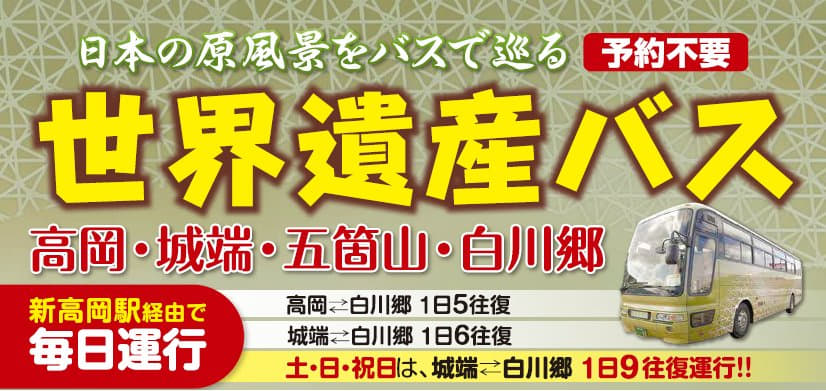

10.19.2017 (星期四)
從名古屋開始, 經過七天向北移動, 來到這日本秋天旅程的中途城市 — 北陸地區的高岡市(Takaoka), 也是我們的中途休息站, 我們會在高岡市停留三天, 計劃悠閒地遊覽五箇山合掌村、黑部市、黑部峽谷、氷見及高岡等等的地方。
按天氣預測, 五箇山、黑部市、黑部峽谷、氷見及高岡未來幾天都是下雨, 而且看來有越來越惡劣的趨勢, 為免夜長夢多, 所以「拿拿聲」趁早安排了今天往這旅程的另一個重點 — 五箇山．白川鄉合掌村 (Gokayama Gassho-zukuri Farmhouses)。
按計劃, 我們是搭乘「加越能バス」的「世界遺産バス」線前往五箇山．白川鄉合掌村。
加越能バス「世界遺産バス」線:
www.kaetsunou.co.jp/company/sekaiisan/
搭乘加越能世界遺産巴士有一個最大的優點, 只要買一張「五箇山・白川鄉フリーきっぷ」一日乘車放題乘車卷, 便可以在高岡、白川鄉間的巴士站入任意上落, 而且不用預約, 這樣便可以隨意安排遊覽巴士沿途經過被列為世界文化遺產的五箇山相倉口 (Ainokura Guchi)、菅沼 (Suganuma) 和荻町白川鄉 (Shirakawa-go)這三個合掌村。
「五箇山・白川鄉フリーきっぷ」一日乘車放題乘車卷。
加越能世界遺産巴士五箇山・白川鄉路線。

但是, 加越能世界遺産巴士每天只有五班巴士行駛高岡、五箇山、白川鄉之間, 時間由早上 8:10至下午16:00, 前後實際只有不足八小時, 所以必須小心考慮路線, 才可以利用「五箇山・白川鄉フリーきっぷ」一日乘車放題乘車卷以最大效益遊覽五箇山及白川鄉三個合掌村。
出發前我考慮了幾個可行的路線, 其實主要只有三個:
路線一: 高岡駅前 → 白川鄉 → 菅沼 → 相倉口 → 高岡駅前
路線二: 高岡駅前 → 相倉口 → 菅沼 → 白川鄉 → 高岡駅前
路線三: 高岡駅前 → 菅沼 → 白川鄉 → 相倉口 → 高岡駅前
接著分析了各路線在各合掌村可逗留的時間, 如下表所示:
當分析了以上各路線在各合掌村可逗留的時間, 很明顯路線二的時間最合適, 所以最後便決定以路線二的次序遊覽五箇山、白川鄉三個合掌村:
我們遊覽五箇山．白川鄉三個合掌村的路線:
高岡駅前 → 相倉口 → 菅沼 → 白川鄉 → 高岡駅前
今天照例早上六時半起床, 和天氣預測一樣, 外面天色昏暗, 正下著大雨。
梳洗完畢, 乘電梯往高岡超級酒店高岡駅南二樓餐廳吃自助早餐, 超級酒店的早餐是從早上六時半開始, 方便早出門的旅客。
早餐十分豐富, 沙拉蔬菜均為有機蔬菜, 無農藥污染, 而沙拉醬不添加任何防腐劑和化學調味料, 使用純天然的植物乳酸菌, 所以越來越喜歡超級酒店, 相信未來的日本旅程可能會減少住宿東橫 INN。
我的第一輪早餐食物。
她的第一輪早餐食物。
吃完早餐, 返回房間收拾一些隨身攜帶的用品及旅遊資料, 約早上七時三十五分走出酒店, 開始今天的五箇山合掌村行程。
走出酒店, 沿馬路走約十分鐘便抵達 JR 高岡駅, 進入車站大樓, 乘手扶電梯往二樓, 在大堂內找不到加越能巴士售票處。最後得了途人的指引, 按指示走出車站大堂, 在另一邊的古城公園出口乘手扶電梯往一樓。
呵呵呵~~~ 這裡有一條高岡地下街, 回程時可以在這裡吃晚飯了!
在JR 高岡駅．古城公園出口四處亂碰, 都看不到「加越能バス」的售票處, 便隨意轉身進入高岡駅大樓看看, 想不到竟然就在這裡!
在高岡駅大樓一樓的加越能巴士售票處買了兩張「五箇山・白川鄉フリーきっぷ」放題乘車卷, 每位是3,500日元, 有了這張乘車卷, 便可以在高岡、五箇山、白川鄉間的巴士站任意上落, 這樣便可以遊覽巴士沿途經過的相倉口合掌村、菅沼合掌村和荻町白川鄉這三個合掌村。

{kind=link}
{kind=link}
{kind=link}